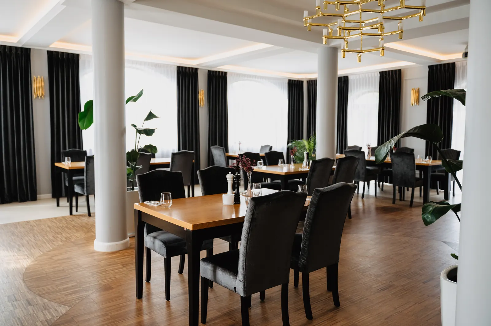
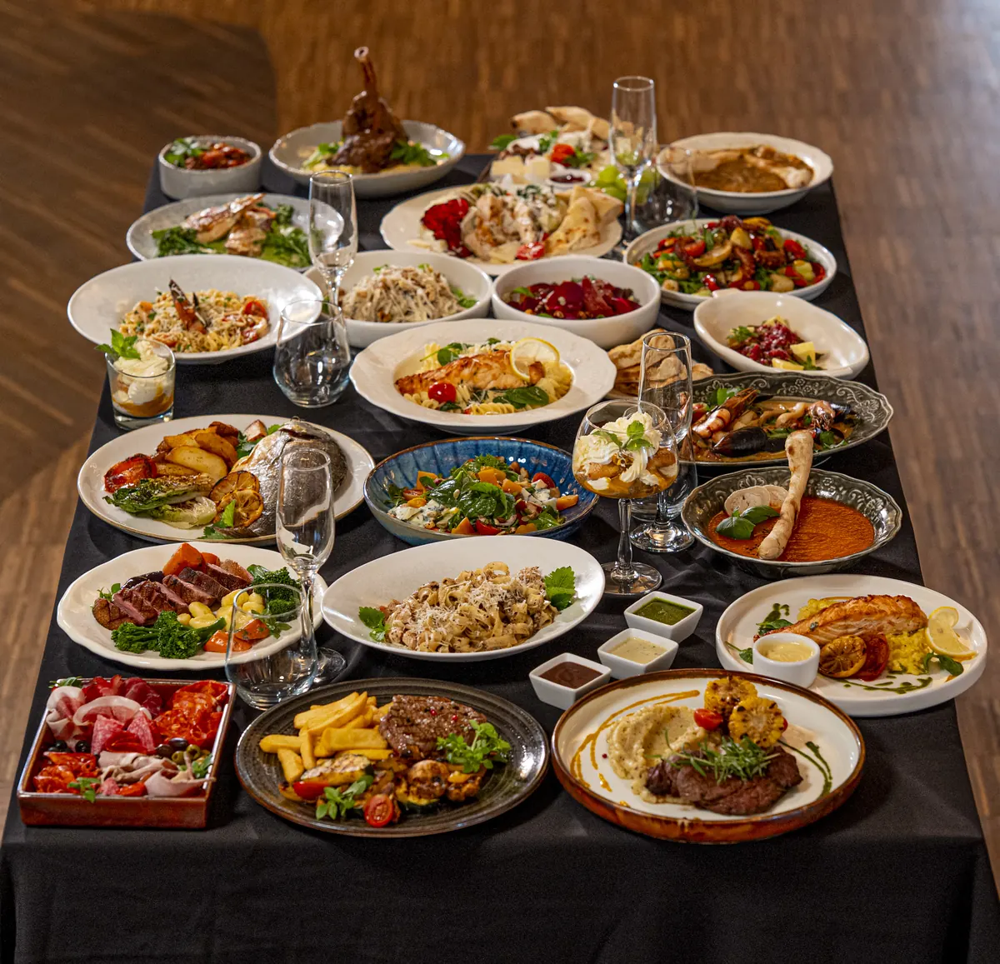

Restauracja Potocki Dwór
Kuchnia polsko-włoska
Tatar, żurek i golonka obok tagliatelle, risotto i pizzy. Karta z gramaturami i cenami, piwa kraftowe i drinki z baru.
Restauracja to serce obiektu
Tworzymy autorskie, wyselekcjonowane menu oparte na najwyższej jakości, świeżych składnikach. Odkryją u nas Państwo oryginalne smaki inspirowane lokalną kulturą kulinarną, podane w nowoczesnej aranżacji.
- Godziny otwarcia
- codziennie 12:00-22:00,
w niedzielę 12:00-21:00 - Rezerwacja stolika
- 798 033 101

Menu na przyjęcie albo spotkanie firmowe
Kolacje serwowane, bufety i stoły biesiadne. Z przyjemnością skomponujemy menu z uwzględnieniem preferencji gości: wegetariańskie, wegańskie, bezglutenowe.